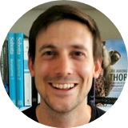

|  |
Tom LenaertsGIS Expert | Web Development Geek I've been working witch GIS in Montenegro, Madagascar, Belgium, Switzerland and Benin. Fluent in French, English, German and Dutch, managing complex projects and answering a large variety of GIS-related questions is what I try to do - always with an open mind, a sense for what's at stake and with the ambition to make the world a better place. |
| Dates | Work | Location |
|---|---|---|
| 2020-... (ongoing) | GIS Expert at Enabel | Cotonou (Benin) |
| 2017-2020 | Project Manager Access Engineering at TM Concept AG | Aarau & Lausanne (Switzerland) |
| 2015-2016 | GIS Consultant at Geo Solutions | Antwerp (Belgium) |
| 2014-2015 | GIS Consultant at Dinika Program | Tuléar (Madagascar) |
|
|